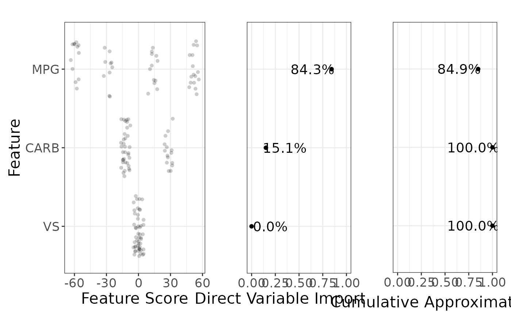

Plot variable importances and cumulative approximation of R^2
g_var_imp.RdPlot variable importances and cumulative approximation of R^2
Arguments
- object
(
sculpture)- feat_labels
(
NULL) or named character vector providing the variable labels.- textsize
Size of text.
- top_k
(
NULL) or number to show only the mostkimportant variables.- pdp_plot_sample
(
logical) Sample PDP for faster ploting? Defaults toTRUE.- show_pdp_plot
(
logical) Show plot with PDP ranges? Defaults toTRUE.- var_imp_type
(
character) One ofc("normalized", "absolute", "ice", "ice_orig_mod"). Defaults to "normalized". "ice" is only valid for a rough sculpture.- logodds_to_prob
(
logical) Only valid for binary response and sculptures built on the log-odds scale. Defaults toFALSE(i.e. no effect). IfTRUE, then the y-values are transformed through inverse logit function 1 / (1 + exp(-x)).- plot_ratios
(
numeric) Used in the layout matrix ofgridExtra::arrangeGrob(). Ifshow_pdp_plot, then the default isc(3,2,2), making the first plot 3 units wide and the other two plots 2 units wide. If!show_pdp_plot, then the default isc(3,2), making the first plot 3 units wide and the second plot 2 units wide. Note that the length needs to be 3 ifshow_pdp_plotor 2 if!show_pdp_plot.
Value
grob. Use grid::grid.draw to plot the output
(grid::grid.newpage resets the plotting area).
Examples
df <- mtcars
df$vs <- as.factor(df$vs)
model <- rpart::rpart(
hp ~ mpg + carb + vs,
data = df,
control = rpart::rpart.control(minsplit = 10)
)
model_predict <- function(x) predict(model, newdata = x)
covariates <- c("mpg", "carb", "vs")
pm <- sample_marginals(df[covariates], n = 50, seed = 5)
rs <- sculpt_rough(
dat = pm,
model_predict_fun = model_predict,
n_ice = 10,
seed = 1,
verbose = 0
)
# optionally define labels
labels <- structure(
toupper(covariates), # labels
names = covariates # current (old) names
)
vi <- g_var_imp(rs, feat_labels = labels)
grid::grid.draw(vi)
